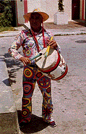

HOME FUNDEF
| Al igual que el resto de todos los diablos danzantes encontrados en Venezuela, los de Naiguatá remontan su orígen a la hispánica fiesta del Corpus Christi. La Colonia en un proceso de sincretización la transformó en la celebración actual de los diablos danzantes, en la cual intervienen elementos del catolicismo (específicamente en el acto religioso que se lleva a cabo cada año el jueves de Corpus Christi), junto a elementos africanos que estructuran el sistema de creencias. Estas fusiones y yuxtaposiciones de elementos culturales, en los diablos de Naiguatá, dialogan activamente con su contexto urbanizado. | Los Diablos Danzantes de Naiguatá, bailan el día jueves de Corpus Christi, pero es la víspera la que realmente los tipifica del resto de los diablos danzantes de Venezuela. |
El miércoles, después del repique de campanas, tres toques de llamada por parte del Cajero, son la señal para que los diablos inicien su descenso desde Cerro Colorado. Se inundan las calles del pueblo de diablos hasta el momento en que se inicia el cumplimiento de promesas: los diablos de rodillas van hasta la puerta de la iglesia para rezar sus oraciones. Posteriormente de forma libre bailan hasta que, los nuevos miembros dibujan un círculo, de rodillas mientras el resto baila pasando las cintas de las máscaras sobre los rostros de los iniciados. |
|
El día jueves, los danzantes se distribuyen por las calles mientras se
realiza la misa al Santísimo Sacramento, a la cual no tienen acceso. La
no presencia de los diablos en la iglesia posee significado ritual, lo
contrario se interpreta como un desafío a los íconos
católicos. Es en este momento cuando adquiere importancia la
noción de renovación: el acto de respeto a la imagen del
Santísimo Sacramento permite pensar en un renacimiento de la fé,
y en consecuencia se produzca la reconstrucción del mundo. Luego de la misa
visitan diferentes casas particulares y negocios, y al caer la noche se ejecuta
la procesión presidida por la Sociedad del Santísimo
Sacramento, secundada por otras asociaciones. La procesión
comprende la visita a siete altares elaborados en distintos lugares del
pueblo. Un detalle que no deja de llamar la atención en los Diablos de Naiguatá es la ausencia de una cofradía o hermandad, la cual existe en otras manifestaciones similares de Venezuela. Igualmente la participación activa de mujeres dentro de los danzantes. Muy probablemente esto se deba al grado de urbanización que han adquirido en parte por la cercanía a un puerto importante como el de La Guaira, así como a la ciudad de Caracas. |

Es importante la plena identificación que cada diablo tiene con la confección de su vestimenta, así como de las máscaras. Los mismos integrantes estampan en pantalones y camisas motivos como círculos, cruces y rayas multicolores, mientras que en las máscaras destacan figuras zoomorfas inspiradas en la fauna marina. Muestra de el arraigado multicromatismo es el testimonio de Víctor Zenón Domínguez, habitante del pueblo, quien nos relata que en Naiguatá "las costumbres son diferentes, en el sentido de la forma de bailar, la forma de vestir. Ustedes podrán ver que los Diablos Danzantes de San Francisco de Yare son de color rojo y bueno, incluso, pues, se quiso practicar una vez en esa forma y resultó que la gente les extrañó porque las costumbres aquí son diferentes" |